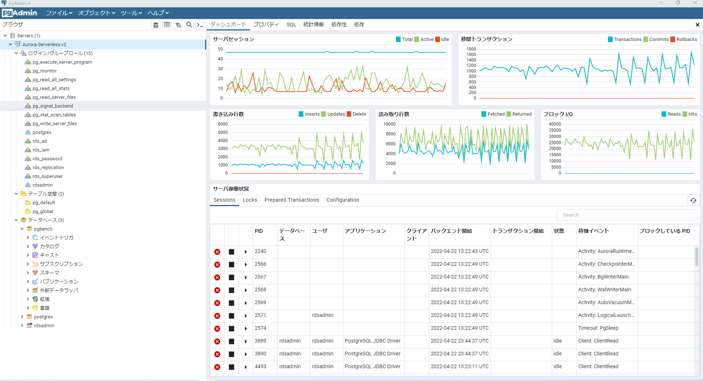

ホーム > Blog > pgAdmin4からAurora PostgreSQLへ踏み台サーバのポートフォ … pgAdmin4からAurora PostgreSQLへ踏み台サーバのポートフォワード経由で接続する 2022/05/09 に公開 📖 約1分 AWS Aurora SSHクライアント側の設定 XShellというSSHクライアント使っていますが、Teratermでも同じような設定が可能。 pgAdmin4の設定 Generalで任意の名前を追加 SSHクライアントで指定したlocalhostとポート番号を指定する 正常ログイン後のダッシュボード  ← 前の記事 DynamoDBからkinesis firehose経由でS3に出力時にJSON形式からCSV形式に … 次の記事 → Lambdaからawslambda-psycopg2を使用してAurora PostgreSQLに接 … 共有: B! 関連しているかもしれない記事 Auroraの各バージョンのサポート期間 Aurora PostgreSQLのDB監査方式（Database Activity Streams or pgaudit？） AWSで東京リージョンから大阪リージョンへのリージョン間のアウトバウンド通信コストを確認 AuroraのIO料金をCost Explolerから確認する Aurora PostgreSQL を AWS CLIで作成 AWS Aurora

 Aurora
Aurora